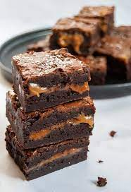

Salted caramel brownies

This is a calory bomb you won't forget soon!
These Salted Caramel Brownies are the ultimate indulgent treat - dark, fudgy chocolate
brownies with a salted
caramel middle… heaven in every bite!
Ingredients
- 250 g butter
- 250 g dark chocolate, broken into squares
- 225g Salted Caramel Sauce Or Carnation Caramel
- 1/2-1 tsp sea salt
- 300 g caster sugar
- 4 large eggs
- 100 g plain flour
- 50 g cocoa powder
Instructions
- Preheat the oven to 180C. Grease and line a 22cm square baking tin.
- Melt the butter slowly in a medium sized saucepan pan and once melted, take off the heat and add the
chocolate and stir in the vanila extract. Stir to melt the chocolate.
- Measure out 200g of the tinned caramel and add the sea salt. Stir to loosen the caramel. In a large
bowl,
beat the sugar, eggs and 25g of the caramel together until well blended. Stir in the melted butter and
chocolate.
- Tip in the flour and cocoa powder and stir until everything is combined. Pour half of this brownie
mixture
into the lined tin.
- Spoon half of the 200g salted caramel over the top of the brownie batter. Pour over the rest of the
brownie
batter on top, trying not to disturb the caramel layer.
- Finally drizzle the remaining caramel over the top and swirl with the tip of a knife to create a marbled
pattern.
- Bake for 40-45 minutes or until set on the top - they should still have a slight wobble in the centre.
Leave
to cool completely in the tin before cutting into squares.
- If you want your brownies to cut into neat squares, I've found the best way to do this is to chill them
overnight in the fridge. You don't need to dip your knife in warm water - more often than not you'll end
up
with a sludgy mess. As soon as you take the brownie slab out of the fridge, cut into squares with a very
sharp knife. Don't use a sawing action - just slice straight down into the chilled brownie. You'll end
up
with professional and neat looking brownies!